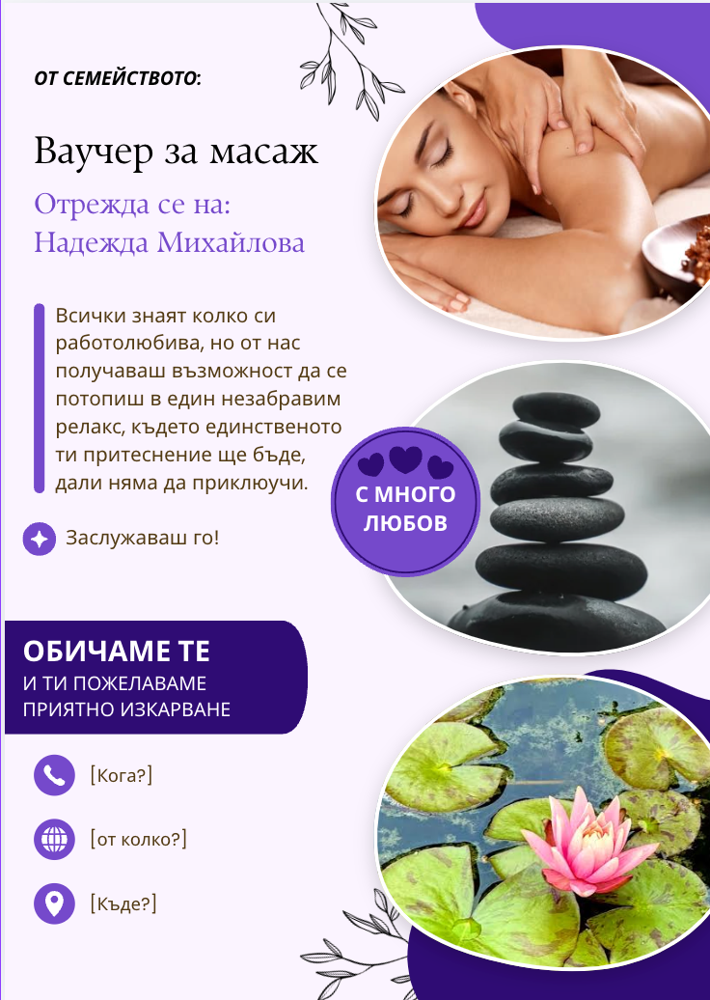

Weil ich Geburtstag hab
Защото имам рожден ден — Gerhard Schöne (Герхард Шьоне)
Куплет 1
Bitte heute keine giftigen Nebel keinen Unfall im Atomkraftwerk keinen Schwefelschnee im Erzgebirge weil ich Geburtstag hab.
Моля, нека днес няма отровни мъгли, нито авария в атомна електроцентрала, нито серен сняг в Рудните планини, защото имам рожден ден.
Куплет 2
Bitte heute keine Toten in Beirut und kein Blut heut in Afghanistan keinen Anschlag heute auf Nicaragua weil ich Geburtstag hab.
Моля, нека днес няма загинали в Бейрут, нито кръвопролития в Афганистан, нито нападение срещу Никарагуа, защото имам рожден ден.
Припев
Weil ich Geburtstag hab und mir was wünschen darf. Weil ich Geburtstag hab und mir was wünschen darf.
Защото имам рожден ден и мога да си пожелая нещо. Защото имам рожден ден и мога да си пожелая нещо.
Куплет 3
Vielleicht 'ne Flasche Sekt aus der SU 'ne Tüte Gummibärchen dazu. Vielleicht im Bett ein Rendezvous weil ich Geburtstag hab.
Може би бутилка пенливо вино от СССР, а към нея пакетче желирани мечета. Може би романтична среща в леглото, защото имам рожден ден.
Куплет 4
Doch bitte heut kein Attentat in Neu-Delhi bitte heute keinen Giftskandal bitte heute keine Flugzeugentführung weil ich Geburtstag hab.
Но моля, нека днес няма атентат в Ню Делхи, нека днес няма скандал с отровни вещества, нека днес няма отвлечен самолет, защото имам рожден ден.
Куплет 5
Bitte heute keine Ölpest an der Nordsee keine Folter heut in der Türkei keine Kinderarbeit heute in Taiwan weil ich Geburtstag hab.
Моля, нека днес няма нефтен разлив в Северно море, нито изтезания в Турция, нито детски труд в Тайван, защото имам рожден ден.
Припев
Weil ich Geburtstag hab und mir was wünschen darf. Weil ich Geburtstag hab und mir was wünschen darf.
Защото имам рожден ден и мога да си пожелая нещо. Защото имам рожден ден и мога да си пожелая нещо.
Куплет 6
Keinen Polenwitz in Frankfurt an der Oder keinen Türkenwitz in Frankfurt am Main keinen Schlagstock auf die Kinder Sowetos weil ich Geburtstag hab.
Нека няма подигравателни шеги за поляците във Франкфурт на Одер, нито шеги за турците във Франкфурт на Майн, нито полицейски палки срещу децата на Совето, защото имам рожден ден.
Куплет 7
Bitte heute keine Rüstungserfolge kalten Kriegern heute keinen Trumpf kein Manöverspiel im Kinderzimmer weil ich Geburtstag hab.
Моля, нека днес няма успехи във въоръжаването, нека привържениците на Студената война нямат коз в ръцете си, нека няма военни игри в детската стая, защото имам рожден ден.
Припев
Weil ich Geburtstag hab und mir was wünschen darf. Weil ich Geburtstag hab und mir was wünschen darf.
Защото имам рожден ден и мога да си пожелая нещо. Защото имам рожден ден и мога да си пожелая нещо.
Последен куплет
Vielleicht, dass mir ein Lied gelingt die Postfrau gute Briefe bringt. Vielleicht, dass uns der Mut nicht sinkt weil ich Geburtstag hab.
Може би да успея да напиша хубава песен, пощальонката да ми донесе хубави писма. Може би да не губим куража си, защото имам рожден ден.